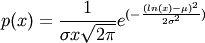

numpy.random.lognormal¶
- numpy.random.lognormal(mean=0.0, sigma=1.0, size=None)¶
Return samples drawn from a log-normal distribution.
Draw samples from a log-normal distribution with specified mean, standard deviation, and shape. Note that the mean and standard deviation are not the values for the distribution itself, but of the underlying normal distribution it is derived from.
Parameters : mean : float
Mean value of the underlying normal distribution
sigma : float, >0.
Standard deviation of the underlying normal distribution
size : tuple of ints
Output shape. If the given shape is, e.g., (m, n, k), then m * n * k samples are drawn.
See also
- scipy.stats.lognorm
- probability density function, distribution, cumulative density function, etc.
Notes
A variable x has a log-normal distribution if log(x) is normally distributed.
The probability density function for the log-normal distribution is

where
 is the mean and
is the mean and  is the standard deviation
of the normally distributed logarithm of the variable.
is the standard deviation
of the normally distributed logarithm of the variable.A log-normal distribution results if a random variable is the product of a large number of independent, identically-distributed variables in the same way that a normal distribution results if the variable is the sum of a large number of independent, identically-distributed variables (see the last example). It is one of the so-called “fat-tailed” distributions.
The log-normal distribution is commonly used to model the lifespan of units with fatigue-stress failure modes. Since this includes most mechanical systems, the log-normal distribution has widespread application.
It is also commonly used to model oil field sizes, species abundance, and latent periods of infectious diseases.
References
[R85] Eckhard Limpert, Werner A. Stahel, and Markus Abbt, “Log-normal Distributions across the Sciences: Keys and Clues”, May 2001 Vol. 51 No. 5 BioScience http://stat.ethz.ch/~stahel/lognormal/bioscience.pdf [R86] Reiss, R.D., Thomas, M.(2001), Statistical Analysis of Extreme Values, Birkhauser Verlag, Basel, pp 31-32. [R87] Wikipedia, “Lognormal distribution”, http://en.wikipedia.org/wiki/Lognormal_distribution Examples
Draw samples from the distribution:
>>> mu, sigma = 3., 1. # mean and standard deviation >>> s = np.random.lognormal(mu, sigma, 1000)
Display the histogram of the samples, along with the probability density function:
>>> import matplotlib.pyplot as plt >>> count, bins, ignored = plt.hist(s, 100, normed=True, align='mid')
>>> x = np.linspace(min(bins), max(bins), 10000) >>> pdf = (np.exp(-(np.log(x) - mu)**2 / (2 * sigma**2)) ... / (x * sigma * np.sqrt(2 * np.pi)))
>>> plt.plot(x, pdf, linewidth=2, color='r') >>> plt.axis('tight') >>> plt.show()
Demonstrate that taking the products of random samples from a uniform distribution can be fit well by a log-normal probability density function.
>>> # Generate a thousand samples: each is the product of 100 random >>> # values, drawn from a normal distribution. >>> b = [] >>> for i in range(1000): ... a = 10. + np.random.random(100) ... b.append(np.product(a))
>>> b = np.array(b) / np.min(b) # scale values to be positive
>>> count, bins, ignored = plt.hist(b, 100, normed=True, align='center')
>>> sigma = np.std(np.log(b)) >>> mu = np.mean(np.log(b))
>>> x = np.linspace(min(bins), max(bins), 10000) >>> pdf = (np.exp(-(np.log(x) - mu)**2 / (2 * sigma**2)) ... / (x * sigma * np.sqrt(2 * np.pi)))
>>> plt.plot(x, pdf, color='r', linewidth=2) >>> plt.show()